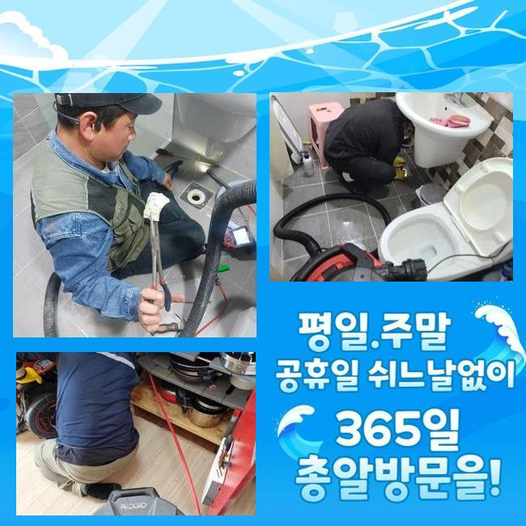
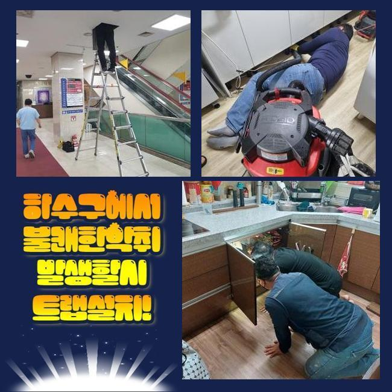
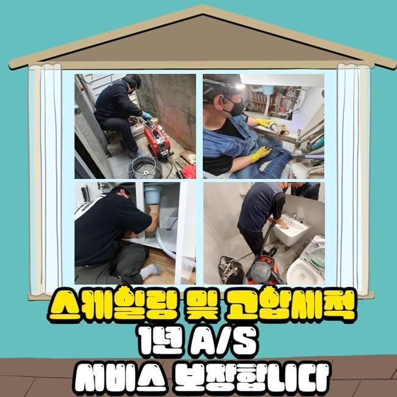
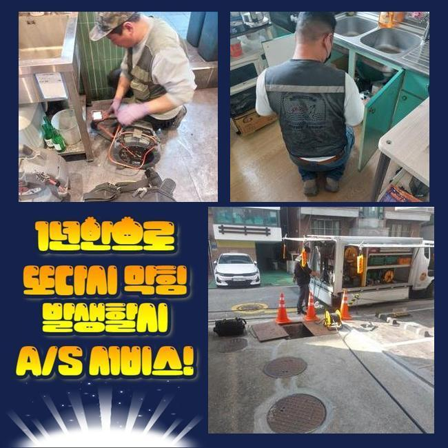
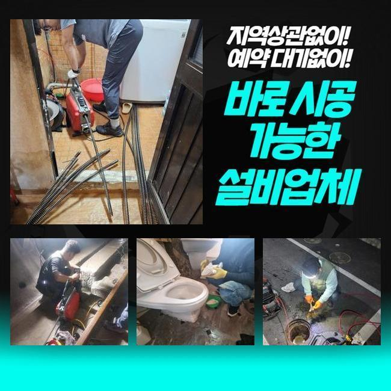

🏠 금천구 가산동오수관역류 시흥동 하수구뚫는비용 물샘전문업체
시흥 하수구막힘 전문 시공 후기

📋 작업 개요
- 위치: 시흥
- 서비스 유형: 하수구막힘, 배관막힘, 맨홀막힘, 누수수리, 역류해결, 뚫는업체, 배관청소, 고압세척, 설비공사
- 작업 일시: 2025. 2. 22. 5:44
- 업체명: 하수구수사대 (010-5615-2118)
🔍 문제 상황
성남 창곡동화장실역류 시흥동 맨홀막힘 설비
평범한 생활 속에서 문제없이 수자원을 사용할 수 있다는건 훨씬 더 고마운 일이죠
단 하루라 해도 하수설비를 이용할 수가 없는 상황이라면 불편하고 힘들 거예요
오전에 저희쪽으로 의뢰주신 사례자님은 초등학교에서 일하시는 사무팀 직원이었습니다
학교 건물쪽의 맨홀라인이 막힌건지 역류현상이 계속되고 있었으며 이제는 지독한 냄새가 퍼져서 긴급하게 수리를 진행해달라고 의뢰 해주셨습니다
현장의 컨디션을 정확하게 판단하기 위해서 이른 오전에 시간을 약속잡고 필요한 장비들을 챙겨서 주소지로 출발했습니다
전문진은 고객분인 알려주신 현장을 방문했고 역한냄새가 나고있는 맨홀쪽을 들여다보니 하수라인의 오수가 역류하고 있었어요
화장실의 배수시설과 교무실의 탕비실도 물내려가는 속도가 느린감이 있었고, 악취등의 현상까지 발견되고 있었어요
담당자분이 막힘문제가 일어난 배관을 해결하는 비용이 얼만지 문의주셔서 그러한 부분들에 대해서 자세히 말씀 드렸어요

🔎 원인 분석
💡 전문가 진단: 정밀 진단 장비를 사용하여 슬러지의 고착 여부를 판명하고 타격/세척 작업을 실시했습니다.
막힘사고가 발생했을때 여하한 방식들로 진행이 되는건지 자세하게 설명 해드리고 현장상황에 필요한 시공과정을 시작했습니다
일단은 맨홀작업을 위해 출입을 통제하는 통행금지 표시판을 세우고 호스관을 이용하여 부패되기 시작한 물과 이물질을 제거했습니다
석션작업을 마무리한 후 문제를 발생시키는 원인이 되는 부분을 진단하였습니다
가지하수구인 경우 가능한다해도 해결이 되지 않을것을 예상하고 교차배관이 전체적으로 연결되는 중심배관의 통수작업을 시작했습니다
작업을 시작하기 위해서 담당자님께 앞으로 진행할 작업과 빠짐없이 하수설비 세척의 비용적인 부분을 안내 해드렸습니다
저희는 서둘러 문제를 해결 할 수 있게 조속하게 조치를 마친 후에 즉시 전문기기를 투입했습니다
지금 배수관 문제가 생기는 상세한 이유를 파악하기 위해서 내시경노즐을 진입시켜 배수관의 문제부위를 모니터합니다
정식적인 하수라인 세정작업을 진행하는 것에 앞서서 내시경선을 집어넣고 모니터에 보이는 배관상태를 확인해 봤더니 메인배수관이 어마 어마한 크기의 기름뭉치로 가로막혀 역류되고 있던 상태였어요
의뢰인께 문제상황을 보여드린 후에 서둘러 전문기계를 준비하여 배관의 막힘문제를 처리하기 위해서 수리에 착수했습니다

🔧 작업 과정
오늘처럼 큰규모의 공사에선 소규모 건물의 배수관을 뚫어내는 석션기기만으론 메인배관을 수리하는게 아주 어려운 일입니다
플랙스샤프트로 배수라인의 이물질을 단순하게 흡입 및 배출시키는 과정이 아닌 고압력의 세정을 진행하여 배수라인 청소를 시행하는게 더 좋은 방법이라고 설명 드렸습니다
이러한 문제가 생겼을때 해결하는 수리비를 물어보시는 경우가 많았으나 플랙스샤프트기로 진행하는지 고압력의 장비를 써야하는지에 따른 비용적인 부분은 다르게 책정됩니다
초반에 알아보신다면 샤프트 장비로처리 될수있는 확률이 높은 관계로 비용이나 작업에 드는 시간을 많이 아끼게 되겠죠
보통은 하수구 뚫어내는 작업에 드는 비용적인 부분을 절약하고자 지인을 통하거나 나홀로 수리 해보겠다 하시는 고객님들이 많았어요
문제의 원인을 찾아서 처리하지 못하는 경우 배수구가 지속해서 막히게 되므로 결국에는 심각한 문제로 발전합니다
이러한 이유들로 오래된 이물질이 하수배관 속에 층을이뤄 형성되어 있는 경우 강한압력의 장비를 통해서 배관 속을 청소해요
내시경 노즐을 통해서 막힘사고가 있는 지점들을 파악한 후에 고압으로 세척하여 중심관에 쌓여있던 이물질을 완벽하게 해결했어요
모니터 해보니 이물질들이 완전히 부서지며 물이 지나는 길이 넓어졌어요
고압력의 세척장비를 활용해서 작업과정을 진행하니 배수라인에서 썩어서 악취가 나는 덩어리가 나오기 시작하면서 끈적한 노폐물이 예상한 것보다 더 많이 내려왔습니다
막힌 하수관을 수리할땐 작업이 길어지더라도 맑은물이 나오는걸 볼때까지 청소를 계속합니다
높은 압력의 힘으로 천천히 불순물이 빠져나가는걸 눈으로 직접 보고 배관에 무리가 가지 않는 것을 우선하여 진행했어요
오늘처럼 대규모 하수설비의 경우 메인의 배수관도 당연히 복잡하게 설치되어 있으므로 일정한 주기로 사전점검을 하는게 안전한 방법이 되겠죠
하수구 해결하는 수리비를 절약하고자 수리를 미루신다면 쉽게 수리를 할수있는 오류들도 높은비용이 드는 수리까지 진행되며 일이 커질 수 있어요
고압청소를 끝내면서 내시경기계를 넣어서 다시한번 확인하고 미처 나가지 못하고 쌓이거나 붙어버린 노폐물을 청소를 완료했어요


✅ 작업 완료
모든 고압세척을 마무리하며 물의 정상적인 흐름을 확인하고 실사용에 다른 문제는 없는가를 다시 한번 살펴보았습니다
통수검사 결과 가장 큰 문제였던 메인의 배수관에 역류현상 또는 막힘이 없었고 교무직원 전용화장실과 급식실의 하수구까지 모두 잘 내려가는 것을 체크했어요
현장 기술진은 어떤 상황이라도 최선을 다해서 문제를 해결하겠습니다
항상 모든분들의 매일 매일이 편안하시길 기도하며 필요한 일이 생기셨을때 편하게 의뢰를 맡겨주신다면 신속하고 정확하게 문제해결을 도와드릴게요




⚠️ 베란다 누수 및 방수 관리 방법
- ✅ 비가 많이 올 때 창틀 주변이나 아래층 천장에 얼룩이 생기는지 정기적으로 확인해 보세요.
- ✅ 우수관 주변 실리콘 마감이 들뜨거나 깨진 틈새가 있는지 손상 여부를 수시로 체크하세요.
- ✅ 베란다 바닥 타일의 줄눈(메지)이 소실되면 그 틈으로 물이 침투하여 누수가 유발됩니다.
- ✅ 누수 의심 증상 발견 시 방치하면 아래층 손실이 커지므로 즉시 전문가의 진단을 받으십시오.
💡 핵심 정리
- 확실한 장비 작업(내시경 점검 및 샤프트 스케일링)으로 원인을 뿌리 뽑습니다.
- 작업 후 1년 이내에 동일한 부위 재발 시 100% 무상 A/S 서비스를 보장합니다.
- 서울 · 경기 · 인천 전 지역에 24시간 언제든 긴급 출동할 수 있도록 항시 대기 중입니다.
❓ 자주 묻는 질문 (FAQ)
🚨 시흥 하수구막힘 문제로 고민이신가요?
정확한 원인 진단과 확실한 시공으로 재발 없는 해결을 약속드립니다.
24시간 긴급 출동 | 서울 · 경기 · 인천 전지역 | 1년 내 재발 시 무상 A/S